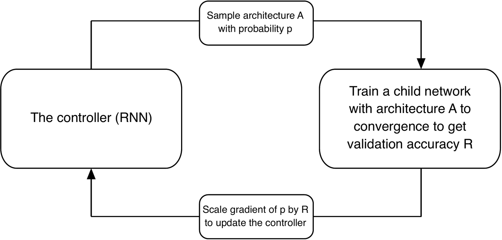

Search spaces, random search, evolution and reinforcement-learning controllers
On this page
Designing architectures by hand is slow and mostly trial and error: a layer made wider here, a skip connection (a path that carries a layer's input past other layers) added there.
Neural architecture search (NAS) hands this job to an automated search.
NAS runs once, before the final model is trained; the search is its own job (Section 3 has its cost), and its output architecture is then trained from scratch. During the search the strategy keeps a memory: a population for evolution, a controller network for reinforcement learning, or architecture weights for differentiable search (DARTS: Differentiable Architecture Search).
This page builds on convolutional networks: kernels and feature maps from CNN Basics: Convolution, Stride and Pooling, and the skip connections of ResNet from ResNet and Residual Connections. Every NAS method has the same three pieces (Figure 1).
Get these wrong and thousands of GPU hours rediscover ResNet, a hand-designed network.
Say each of \(L\) layers picks one op out of \(k\) candidates, from a small set like a \(3\times3\) convolution, a \(5\times5\) convolution, a \(3\times3\) separable convolution, max pooling and a skip that passes its input through, the one Listing A searches. Every added layer multiplies the count by \(k\) again, so even a small space holds far more architectures than any search can visit. The card states that count \(N\) for any \(k\) and \(L\).
At that size, brute force is not a plan. So what matters is the search strategy, not the size of the space.
Random search and evolution both fit in a few lines on a toy space of architectures with fixed accuracies; score is a lookup standing in for training, and mutate moves a short step.
import random
def run_search(n_architectures, budget, max_step):
acc = [random.random() for _ in range(n_architectures)]
# stands in for training
def score(a):
return acc[a]
def mutate(a):
step = random.randint(-max_step, max_step)
# stay inside the space
return min(n_architectures - 1, max(0, a + step))
samples = random.choices(range(n_architectures), k=budget)
return max(samples, key=score)score looks up a stored accuracy instead of training.mutate moves to a nearby architecture, at most a short step away (this page's choice, not a published setting). A larger step explores more but can jump off a good peak; a smaller one refines a peak but can stay stuck on a small one.Evolution spends the same budget of architectures to train and score on a population, replacing the worst with a mutated copy of the best. Hill climbing is a population of one that keeps a mutation only if it scores higher.
def run_evolution(score, mutate, n_architectures, budget, population):
pop = random.choices(range(n_architectures), k=population)
for _ in range(budget - population):
# worst first
pop.sort(key=score)
pop[0] = mutate(pop[-1])
return max(pop, key=score)NAS can only find what the search space contains.
Figure 3. Three searches race; hill climbing can stall.
Toy simulation with a fixed seed, not real NAS results.
Reinforcement learning is the NASNet approach. A controller, usually a small RNN (recurrent neural network, which emits its choices one at a time; taught in Recurrent Neural Networks: RNN, GRU, and LSTM), samples architectures; each is trained, and its validation accuracy (on held-out data) comes back as a reward.

The controller is a policy: for each choice it gives every option a probability, written \(\pi(a)\) for the option \(a\) it actually picked, and the reward \(R\) is the child's validation accuracy. The first NAS updates it with REINFORCE against a baseline (step 4 of Figure 5); NASNet uses PPO (Proximal Policy Optimization, which limits how far one update can move the policy). REINFORCE, the log-probability it raises and the baseline it subtracts are taught, with PPO, in Policy-Based and Actor-Critic Methods: REINFORCE, PPO and SAC.
Figure 5. One loop round; reward lifts each pick.
loss = -logp * reward.The listing runs that update without a baseline on a one-layer toy: logits choose among kernels, and a lookup table perf stands in for training.
import torch
from torch.distributions import Categorical
def train_controller(kernel_sizes, rewards, learning_rate, n_steps):
perf = torch.tensor(rewards) # stored reward per kernel
logits = torch.nn.Parameter(torch.zeros(len(kernel_sizes)))
opt = torch.optim.Adam([logits], lr=learning_rate)
for step in range(n_steps):
dist = Categorical(logits=logits)
action = dist.sample()
reward = perf[action]
logp = dist.log_prob(action)
loss = -logp * reward
opt.zero_grad()
loss.backward()
opt.step()The probability mass drifts toward the best kernel; without a baseline some runs wander first. With real training in place of the lookup, this is the first NAS controller's REINFORCE update in miniature, minus its baseline and its RNN. NASNet trained the same kind of RNN controller with PPO instead.
NASNet (Zoph et al. 2018) cut the cost of the first NAS by searching for small cells instead of whole networks (Figure 6).
NASNet searches for two cells on CIFAR-10 (60,000 tiny labeled images), a cheap stand-in for ImageNet (the large standard image-classification dataset): a normal cell keeps the feature map (a layer's output grid) the same size and a reduction cell halves it. The same cell design scales by construction.
EfficientNet-B0, the best-known result of RL search, is a small mobile model. The controller searched the MnasNet mobile space with a reward trading accuracy against FLOPs (the count of arithmetic operations). The authors then scaled B0 up with compound scaling, one coefficient growing depth, width and resolution (the card below).
EfficientNet's own ratios (Tan and Le 2019) are 1.2 for depth, 1.1 for width and 1.15 for resolution, applied once per step of the knob \(\phi\) (B0 is \(\phi = 0\)); the card names them \(\alpha\), \(\beta\) and \(\gamma\).
The strategy is an outer loop; each child is an ordinary short training job on a proxy, and its validation score goes back to the strategy. The evolution loop of Section 2 cannot be reused: it rescores the whole population every round, so the scoring bill runs far past the budget, and its mutate moves an index along a line, not a choice inside an architecture.
Listing A trains one child: an architecture is a list of \(L\) choices from the five ops of Section 2.1, and score trains it briefly on proxy_loader (a training subset) and returns accuracy on the held-out val_loader.
import torch
import torch.nn as nn
import torch.nn.functional as F
def make_ops(c):
return {
"conv3": lambda: nn.Sequential(nn.Conv2d(c, c, 3, padding=1), nn.ReLU()),
"conv5": lambda: nn.Sequential(nn.Conv2d(c, c, 5, padding=2), nn.ReLU()),
"sep3": lambda: nn.Sequential(nn.Conv2d(c, c, 3, padding=1, groups=c),
nn.Conv2d(c, c, 1), nn.ReLU()),
"pool": lambda: nn.MaxPool2d(3, stride=1, padding=1),
"skip": lambda: nn.Identity(),
}
def build(arch, c):
ops = make_ops(c)
layers = [ops[op]() for op in arch]
return nn.Sequential(nn.Conv2d(3, c, 3, padding=1), *layers,
nn.AdaptiveAvgPool2d(1), nn.Flatten(), nn.Linear(c, 10))
def score(arch, c, epochs, learning_rate, momentum):
net = build(arch, c)
opt = torch.optim.SGD(net.parameters(), lr=learning_rate, momentum=momentum)
net.train()
for _ in range(epochs):
for x, y in proxy_loader:
loss = F.cross_entropy(net(x), y)
opt.zero_grad()
loss.backward()
opt.step()
net.eval()
with torch.no_grad():
hits = sum((net(x).argmax(1) == y).sum().item() for x, y in val_loader)
return hits / len(val_loader.dataset)build, which stacks one op per layer between a first convolution and a classifier. Convolution and max pooling are taught in CNN Basics: Convolution, Stride and Pooling; sep3 is a depthwise-separable convolution (groups=c), taught in Efficient CNNs: MobileNet and EfficientNet.Listing B is aging evolution (Algorithm 1 of Real et al. 2019, the AmoebaNet search). Members keep their scores, so each child trains once; each cycle mutates the best of \(S\) sampled members and drops the oldest.
import random, collections
OPS = ["conv3", "conv5", "sep3", "pool", "skip"]
def aging_evolution(score, n_layers, population, sample_size, budget):
def mutate(arch):
child = list(arch)
i = random.randrange(n_layers)
others = [op for op in OPS if op != arch[i]]
child[i] = random.choice(others)
return child
# each member is (arch, acc): trained once, kept
pop = collections.deque()
history = []
while len(pop) < population:
a = [random.choice(OPS) for _ in range(n_layers)]
pop.append((a, score(a)))
history.append(pop[-1])
while len(history) < budget:
sample = random.choices(list(pop), k=sample_size)
parent = max(sample, key=lambda m: m[1])[0]
child = mutate(parent)
pop.append((child, score(child)))
history.append(pop[-1])
# drop the oldest
pop.popleft()
return max(history, key=lambda m: m[1])[0]mutate changes one layer to a different op.score runs once per child.NNI's RegularizedEvolution defaults to the paper's population and sample sizes. A larger \(S\) picks parents more greedily (\(S = 1\) is random search); a larger \(P\) remembers more but adapts more slowly. Repeat architectures are retrained on purpose, so only those that retrain well survive.
The per-child budget sets the bill. The first NAS (Zoph and Le 2017) trained every child for many epochs. MnasNet trained each sampled model briefly on ImageNet, with a reward that also charged for latency, the time one prediction takes on the target hardware.
Implementations include MnasNet's code (tensorflow/tpu) and NNI's ready-made random, evolution and RL (PolicyBasedRL) strategies.
Each method here trains every candidate separately, thousands of GPU-days per search. Can the choice itself be trained by gradient descent, inside one network? DARTS: Differentiable Architecture Search does that.